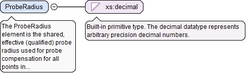
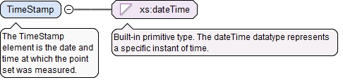

The required n attribute is the number of unit definitions in the set.
Source
<xs:element name="Units" type="OtherUnitsType" minOccurs="0"><xs:annotation><xs:documentation>The optional Units element specifies the units used in the point set.</xs:documentation></xs:annotation></xs:element>
The optional asmPathId attribute is a reference used for locating the id of an assembly path. If the asmPathXId attribute is not used, the asmPathId is a reference to an assembly path in the AsmPaths of the local document. If the asmPathXId is used, the asmPathId is the local id of an external QIF document, and the asmPathXId is a reference to an assembly path in the external QIF document. The assembly path (instantiation chain) unambiguously identifies a model entity within an assembly.
The optional asmPathXId attribute, if used, is a reference to the id of an assembly path in the external document identified by the asmPathId. The asmPathXId must not be used if the asmPathId is not used.
The optional xId attribute is a reference to the id of a QIF object in an external document. A QIF object in an external QIF document can be referenced by using references to two QIF ids: the id of the external document reference of type ExternalQIFDocumentReferenceType found in the local document and the id of the object found in the external document.
Source
<xs:element name="CoordinateSystemId" type="QIFReferenceFullType"><xs:annotation><xs:documentation>The CoordinateSystemId element is the QIF id of the coordinate system in which this measured point set is defined.</xs:documentation></xs:annotation></xs:element>
The optional xId attribute is a reference to the id of a QIF object in an external document. A QIF object in an external QIF document can be referenced by using references to two QIF ids: the id of the external document reference of type ExternalQIFDocumentReferenceType found in the local document and the id of the object found in the external document.
Source
<xs:element name="TranformId" type="QIFReferenceType"><xs:annotation><xs:documentation>The TranformId element is the QIF id of a transform to be applied to the point set to bring it into the common coordinate system.</xs:documentation></xs:annotation></xs:element>
<xs:element name="Points" type="ListDoubleType"><xs:annotation><xs:documentation>The Points element is a list of count XYZ coordinates for the count points in the measured point set. This list must have 3*count entries.</xs:documentation></xs:annotation></xs:element>
The BinaryPoints element is a list of count XYZ coordinates for the count points in the measured point set stored as a binary array. This binary array must contain 3*count elements.
The required sizeElement attribute shows the size (in bytes) of one element stored in the array. The total size of the binary array can be calculated as: count*sizeElement.
Source
<xs:element name="BinaryPoints" type="ArrayBinaryType"><xs:annotation><xs:documentation>The BinaryPoints element is a list of count XYZ coordinates for the count points in the measured point set stored as a binary array. This binary array must contain 3*count elements.</xs:documentation></xs:annotation></xs:element>
The Normals element is a list of count IJK vector components for the count normal vectors in the measured point set. This list must have 3*count entries.
<xs:element name="Normals" type="ListDoubleType"><xs:annotation><xs:documentation>The Normals element is a list of count IJK vector components for the count normal vectors in the measured point set. This list must have 3*count entries.</xs:documentation></xs:annotation></xs:element>
The BinaryNormals element is a list of count IJK vector components for the count normal vectors in the measured point set stored as a binary array. This binary array must contain 3*count elements.
The required sizeElement attribute shows the size (in bytes) of one element stored in the array. The total size of the binary array can be calculated as: count*sizeElement.
Source
<xs:element name="BinaryNormals" type="ArrayBinaryType"><xs:annotation><xs:documentation>The BinaryNormals element is a list of count IJK vector components for the count normal vectors in the measured point set stored as a binary array. This binary array must contain 3*count elements.</xs:documentation></xs:annotation></xs:element>
The Compensated element describes whether all points in the measured point set have been compensated for probe radius. A value of "true" means the points have been compensated. A value of "false" means the points have not been compensated.
Diagram
Type
xs:boolean
Properties
content
simple
Source
<xs:element name="Compensated" type="xs:boolean"><xs:annotation><xs:documentation>The Compensated element describes whether all points in the measured point set have been compensated for probe radius. A value of "true" means the points have been compensated. A value of "false" means the points have not been compensated.</xs:documentation></xs:annotation></xs:element>
The Compensations element is a list describing whether each point in the measured point set has been compensated for probe radius. A value of "true" means the point has been compensated. A value of "false" means the point has not been compensated. This list must have count entries.
<xs:element name="Compensations" type="ListBooleanType"><xs:annotation><xs:documentation>The Compensations element is a list describing whether each point in the measured point set has been compensated for probe radius. A value of "true" means the point has been compensated. A value of "false" means the point has not been compensated. This list must have count entries.</xs:documentation></xs:annotation></xs:element>
The BinaryCompensated element is a list describing whether each point in the measured point set has been compensated for probe radius stored as a binary array. A non-zero value means the point has been compensated. A zero value means the point has not been compensated. This binary array must contain count entries.
The required sizeElement attribute shows the size (in bytes) of one element stored in the array. The total size of the binary array can be calculated as: count*sizeElement.
Source
<xs:element name="BinaryCompensated" type="ArrayBinaryType"><xs:annotation><xs:documentation>The BinaryCompensated element is a list describing whether each point in the measured point set has been compensated for probe radius stored as a binary array. A non-zero value means the point has been compensated. A zero value means the point has not been compensated. This binary array must contain count entries.</xs:documentation></xs:annotation></xs:element>
The ProbeRadius element is the shared, effective (qualified) probe radius used for probe compensation for all points in the measured point set.
Diagram

Type
xs:decimal
Properties
content
simple
Source
<xs:element name="ProbeRadius" type="xs:decimal"><xs:annotation><xs:documentation>The ProbeRadius element is the shared, effective (qualified) probe radius used for probe compensation for all points in the measured point set.</xs:documentation></xs:annotation></xs:element>
The ProbeRadii element is a list of the effective (qualified) probe radii used for probe compensation for each point in the measured point set. This list must have count entries.
<xs:element name="ProbeRadii" type="ListDoubleType"><xs:annotation><xs:documentation>The ProbeRadii element is a list of the effective (qualified) probe radii used for probe compensation for each point in the measured point set. This list must have count entries.</xs:documentation></xs:annotation></xs:element>
The BinaryProbeRadii element is a list of the effective (qualified) probe radii used for probe compensation for each point in the measured point set stored as a binary array. This binary array must contain count entries.
The required sizeElement attribute shows the size (in bytes) of one element stored in the array. The total size of the binary array can be calculated as: count*sizeElement.
Source
<xs:element name="BinaryProbeRadii" type="ArrayBinaryType"><xs:annotation><xs:documentation>The BinaryProbeRadii element is a list of the effective (qualified) probe radii used for probe compensation for each point in the measured point set stored as a binary array. This binary array must contain count entries.</xs:documentation></xs:annotation></xs:element>
The optional xId attribute is a reference to the id of a QIF object in an external document. A QIF object in an external QIF document can be referenced by using references to two QIF ids: the id of the external document reference of type ExternalQIFDocumentReferenceType found in the local document and the id of the object found in the external document.
Source
<xs:element name="MeasurementDeviceId" type="QIFReferenceType" minOccurs="0"><xs:annotation><xs:documentation>The MeasurementDeviceId element is the QIF id of the measurement device used to measure all points.</xs:documentation></xs:annotation></xs:element>
The optional xId attribute is a reference to the id of a QIF object in an external document. A QIF object in an external QIF document can be referenced by using references to two QIF ids: the id of the external document reference of type ExternalQIFDocumentReferenceType found in the local document and the id of the object found in the external document.
Source
<xs:element name="SensorId" type="QIFReferenceType"><xs:annotation><xs:documentation>The SensorId element is the shared QIF id of the sensor (e.g., tactile probe) used to measure all points.</xs:documentation></xs:annotation></xs:element>
The required n attribute is the number of QIF id references in this list.
Source
<xs:element name="SensorIds" type="ListQIFReferenceType"><xs:annotation><xs:documentation>The SensorIds element is a list of the QIF ids of the sensors (e.g., tactile probes) used to measure each point. This list must have count entries.</xs:documentation></xs:annotation></xs:element>
The BinarySensorIds element is a binary array of the QIF ids of the sensors (e.g., tactile probes) used to measure each point. This binary array must contain count entries.
<xs:element name="BinarySensorIds" type="ArrayBinaryQIFReferenceType"><xs:annotation><xs:documentation>The BinarySensorIds element is a binary array of the QIF ids of the sensors (e.g., tactile probes) used to measure each point. This binary array must contain count entries.</xs:documentation></xs:annotation></xs:element>
The optional xId attribute is a reference to the id of a QIF object in an external document. A QIF object in an external QIF document can be referenced by using references to two QIF ids: the id of the external document reference of type ExternalQIFDocumentReferenceType found in the local document and the id of the object found in the external document.
Source
<xs:element name="TipId" type="QIFReferenceType"><xs:annotation><xs:documentation>The TipId element is the QIF id of the tip of a complex tactile probe used to measure all points. This must be the id of a ProbeTipType object.</xs:documentation></xs:annotation></xs:element>
The TipIds element is a list of the QIF ids of the tips of complex tactile probes used to measure each point. These must be the ids of ProbeTipType objects. This list must have count entries.
The required n attribute is the number of QIF id references in this list.
Source
<xs:element name="TipIds" type="ListQIFReferenceType"><xs:annotation><xs:documentation>The TipIds element is a list of the QIF ids of the tips of complex tactile probes used to measure each point. These must be the ids of ProbeTipType objects. This list must have count entries.</xs:documentation></xs:annotation></xs:element>
The BinaryTipIds element is a binary array of the QIF ids of the tips of complex tactile probes used to measure each point. These must be the ids of ProbeTipType objects. This binary array must contain count entries.
<xs:element name="BinaryTipIds" type="ArrayBinaryQIFReferenceType"><xs:annotation><xs:documentation>The BinaryTipIds element is a binary array of the QIF ids of the tips of complex tactile probes used to measure each point. These must be the ids of ProbeTipType objects. This binary array must contain count entries.</xs:documentation></xs:annotation></xs:element>
The MeasurePointNominalIds element is a list of the QIF ids of measure point nominals corresponding to each measure point. This list must have count entries.
The optional asmPathId attribute is a reference used for locating the id of an assembly path. If the asmPathXId attribute is not used, the asmPathId is a reference to an assembly path in the AsmPaths of the local document. If the asmPathXId is used, the asmPathId is the local id of an external QIF document, and the asmPathXId is a reference to an assembly path in the external QIF document. The assembly path (instantiation chain) unambiguously identifies a model entity within an assembly.
The optional asmPathXId attribute, if used, is a reference to the id of an assembly path in the external document identified by the asmPathId. The asmPathXId must not be used if the asmPathId is not used.
The required n attribute is the number of QIF id references in this list.
Source
<xs:element name="MeasurePointNominalIds" type="ListQIFReferenceFullType"><xs:annotation><xs:documentation>The MeasurePointNominalIds element is a list of the QIF ids of measure point nominals corresponding to each measure point. This list must have count entries.</xs:documentation></xs:annotation></xs:element>
The BinaryMeasurePointNominalIds element is a binary array of the QIF ids of measure point nominals corresponding to each measure point. This binary array must contain count entries.
The optional asmPathId attribute is a reference used for locating the id of an assembly path. If the asmPathXId attribute is not used, the asmPathId is a reference to an assembly path in the AsmPaths of the local document. If the asmPathXId is used, the asmPathId is the local id of an external QIF document, and the asmPathXId is a reference to an assembly path in the external QIF document. The assembly path (instantiation chain) unambiguously identifies a model entity within an assembly.
The optional asmPathXId attribute, if used, is a reference to the id of an assembly path in the external document identified by the asmPathId. The asmPathXId must not be used if the asmPathId is not used.
Source
<xs:element name="BinaryMeasurePointNominalIds" type="ArrayBinaryQIFReferenceFullType"><xs:annotation><xs:documentation>The BinaryMeasurePointNominalIds element is a binary array of the QIF ids of measure point nominals corresponding to each measure point. This binary array must contain count entries.</xs:documentation></xs:annotation></xs:element>
The TimeStamp element is the date and time at which the point set was measured.
Diagram

Type
xs:dateTime
Properties
content
simple
Source
<xs:element name="TimeStamp" type="xs:dateTime"><xs:annotation><xs:documentation>The TimeStamp element is the date and time at which the point set was measured.</xs:documentation></xs:annotation></xs:element>
<xs:element name="TimeStamps" type="ListDateTimeType"><xs:annotation><xs:documentation>The TimeStamps element is a list of time stamps, one for each measure point. This list must have count entries.</xs:documentation></xs:annotation></xs:element>
<xs:element name="Quality" type="ListDoubleType"><xs:annotation><xs:documentation>The Quality element is a list of the quality factors for each measure point. This list must have count entries.</xs:documentation></xs:annotation></xs:element>
The required sizeElement attribute shows the size (in bytes) of one element stored in the array. The total size of the binary array can be calculated as: count*sizeElement.
Source
<xs:element name="BinaryQuality" type="ArrayBinaryType"><xs:annotation><xs:documentation>The BinaryQuality element is a binary array of the quality factors for each measure point. This binary array must contain count entries.</xs:documentation></xs:annotation></xs:element>
<xs:element name="Deviations" type="ListDoubleType"><xs:annotation><xs:documentation>The Deviations element is a list of the deviations from nominal for each measure point. This list must have count entries.</xs:documentation></xs:annotation></xs:element>
The required sizeElement attribute shows the size (in bytes) of one element stored in the array. The total size of the binary array can be calculated as: count*sizeElement.
Source
<xs:element name="BinaryDeviations" type="ArrayBinaryType"><xs:annotation><xs:documentation>The BinaryDeviations element is a binary array of the deviations from nominal for each measure point. This binary array must contain count entries.</xs:documentation></xs:annotation></xs:element>
The Colors element is a list of RGB integer triplet defined colors representing the deviations from nominal for each measure point. This list must have 3*count entries.
<xs:element name="Colors" type="ListIntType"><xs:annotation><xs:documentation>The Colors element is a list of RGB integer triplet defined colors representing the deviations from nominal for each measure point. This list must have 3*count entries.</xs:documentation></xs:annotation></xs:element>
The BinaryColors element is a binary array of RGB colors representing deviations from nominal for each measure point. This binary array must contain 3*count entries.
The required sizeElement attribute shows the size (in bytes) of one element stored in the array. The total size of the binary array can be calculated as: count*sizeElement.
Source
<xs:element name="BinaryColors" type="ArrayBinaryType"><xs:annotation><xs:documentation>The BinaryColors element is a binary array of RGB colors representing deviations from nominal for each measure point. This binary array must contain 3*count entries.</xs:documentation></xs:annotation></xs:element>
<xs:element name="NumberOfFacets" type="NaturalType"><xs:annotation><xs:documentation>The number of triangularfacets in the mesh defined by three point indices.</xs:documentation></xs:annotation></xs:element>
The PointIndices element is a list point indices, 3 foreach triangular facet. All three point indexes of atriangle must be different and must lie in the range [1, ..., number of points]. This list must haveNumberOfFacets elements. The ordering of the vertices ona facet must be such that the normal vector of the facetis defined by the right hand rule.
The required count attribute gives the number of integer triplets represented by the array. The number of entries in the array must be 3*count.
Source
<xs:element name="PointIndices" type="ArrayI3Type"><xs:annotation><xs:documentation>The PointIndices element is a list point indices, 3 for each triangular facet. All three point indexes of a triangle must be different and must lie in the range [1, ..., number of points]. This list must have NumberOfFacets elements. The ordering of the vertices on a facet must be such that the normal vector of the facet is defined by the right hand rule.</xs:documentation></xs:annotation></xs:element>
The BinaryPointIndices element is a binary array of point indices, 3 for each triangularfacet. All three point indexes of a triangle must be different and must lie in the range [1, ..., number of points]. This binary array must contain NumberOfFacets elements. The ordering of the vertices on a facet must be such that the normal vector of the facet is defined by the right hand rule.
The required sizeElement attribute shows the size (in bytes) of one element stored in the array. The total size of the binary array can be calculated as: count*sizeElement.
Source
<xs:element name="BinaryPointIndices" type="ArrayBinaryType"><xs:annotation><xs:documentation>The BinaryPointIndices element is a binary array of point indices, 3 for each triangularfacet. All three point indexes of a triangle must be different and must lie in the range [1, ..., number of points]. This binary array must contain NumberOfFacets elements. The ordering of the vertices on a facet must be such that the normal vector of the facet is defined by the right hand rule.</xs:documentation></xs:annotation></xs:element>
The MeasuredPointSetType defines a list of ordered measurement points for a feature. The number of points in the set is defined by the count attribute. The point set may be optionally ordered into a mesh.
<xs:complexType name="MeasuredPointSetType"><xs:annotation><xs:documentation>The MeasuredPointSetType defines a list of ordered measurement points for a feature. The number of points in the set is defined by the count attribute. The point set may be optionally ordered into a mesh.</xs:documentation></xs:annotation><xs:sequence><xs:element ref="Attributes" minOccurs="0"><xs:annotation><xs:documentation>The optional Attributes element contains user defined attributes (typified, binary array, or XML structured).</xs:documentation></xs:annotation></xs:element><xs:element name="Units" type="OtherUnitsType" minOccurs="0"><xs:annotation><xs:documentation>The optional Units element specifies the units used in the point set.</xs:documentation></xs:annotation></xs:element><xs:choice minOccurs="0"><xs:annotation><xs:documentation>This optional compositor provides a choice between a coordinate system or a transform. If this choice is not present then the measured point set is defined in the common coordinate system.</xs:documentation></xs:annotation><xs:element name="CoordinateSystemId" type="QIFReferenceFullType"><xs:annotation><xs:documentation>The CoordinateSystemId element is the QIF id of the coordinate system in which this measured point set is defined.</xs:documentation></xs:annotation></xs:element><xs:element name="TranformId" type="QIFReferenceType"><xs:annotation><xs:documentation>The TranformId element is the QIF id of a transform to be applied to the point set to bring it into the common coordinate system.</xs:documentation></xs:annotation></xs:element></xs:choice><xs:choice><xs:annotation><xs:documentation>This compositor provides a choice between decimal or binary XYZ measured point values.</xs:documentation></xs:annotation><xs:element name="Points" type="ListDoubleType"><xs:annotation><xs:documentation>The Points element is a list of count XYZ coordinates for the count points in the measured point set. This list must have 3*count entries.</xs:documentation></xs:annotation></xs:element><xs:element name="BinaryPoints" type="ArrayBinaryType"><xs:annotation><xs:documentation>The BinaryPoints element is a list of count XYZ coordinates for the count points in the measured point set stored as a binary array. This binary array must contain 3*count elements.</xs:documentation></xs:annotation></xs:element></xs:choice><xs:choice minOccurs="0"><xs:annotation><xs:documentation>This optional compositor provides a choice between decimal or binary IJK normal vector values. The normal vectors can be used for probe compensation or for designating material side for scan data.</xs:documentation></xs:annotation><xs:element name="Normals" type="ListDoubleType"><xs:annotation><xs:documentation>The Normals element is a list of count IJK vector components for the count normal vectors in the measured point set. This list must have 3*count entries.</xs:documentation></xs:annotation></xs:element><xs:element name="BinaryNormals" type="ArrayBinaryType"><xs:annotation><xs:documentation>The BinaryNormals element is a list of count IJK vector components for the count normal vectors in the measured point set stored as a binary array. This binary array must contain 3*count elements.</xs:documentation></xs:annotation></xs:element></xs:choice><xs:choice><xs:annotation><xs:documentation>This compositor provides a choice between shared or individual flags for probe compensation.</xs:documentation></xs:annotation><xs:element name="Compensated" type="xs:boolean"><xs:annotation><xs:documentation>The Compensated element describes whether all points in the measured point set have been compensated for probe radius. A value of "true" means the points have been compensated. A value of "false" means the points have not been compensated.</xs:documentation></xs:annotation></xs:element><xs:element name="Compensations" type="ListBooleanType"><xs:annotation><xs:documentation>The Compensations element is a list describing whether each point in the measured point set has been compensated for probe radius. A value of "true" means the point has been compensated. A value of "false" means the point has not been compensated. This list must have count entries.</xs:documentation></xs:annotation></xs:element><xs:element name="BinaryCompensated" type="ArrayBinaryType"><xs:annotation><xs:documentation>The BinaryCompensated element is a list describing whether each point in the measured point set has been compensated for probe radius stored as a binary array. A non-zero value means the point has been compensated. A zero value means the point has not been compensated. This binary array must contain count entries.</xs:documentation></xs:annotation></xs:element></xs:choice><xs:choice minOccurs="0"><xs:annotation><xs:documentation>This optional compositor provides a choice between shared or individual probe radii for probe compensation.</xs:documentation></xs:annotation><xs:element name="ProbeRadius" type="xs:decimal"><xs:annotation><xs:documentation>The ProbeRadius element is the shared, effective (qualified) probe radius used for probe compensation for all points in the measured point set.</xs:documentation></xs:annotation></xs:element><xs:element name="ProbeRadii" type="ListDoubleType"><xs:annotation><xs:documentation>The ProbeRadii element is a list of the effective (qualified) probe radii used for probe compensation for each point in the measured point set. This list must have count entries.</xs:documentation></xs:annotation></xs:element><xs:element name="BinaryProbeRadii" type="ArrayBinaryType"><xs:annotation><xs:documentation>The BinaryProbeRadii element is a list of the effective (qualified) probe radii used for probe compensation for each point in the measured point set stored as a binary array. This binary array must contain count entries.</xs:documentation></xs:annotation></xs:element></xs:choice><xs:element name="MeasurementDeviceId" type="QIFReferenceType" minOccurs="0"><xs:annotation><xs:documentation>The MeasurementDeviceId element is the QIF id of the measurement device used to measure all points.</xs:documentation></xs:annotation></xs:element><xs:choice minOccurs="0"><xs:annotation><xs:documentation>This optional compositor provides a choice between shared or individual sensor ids.</xs:documentation></xs:annotation><xs:element name="SensorId" type="QIFReferenceType"><xs:annotation><xs:documentation>The SensorId element is the shared QIF id of the sensor (e.g., tactile probe) used to measure all points.</xs:documentation></xs:annotation></xs:element><xs:element name="SensorIds" type="ListQIFReferenceType"><xs:annotation><xs:documentation>The SensorIds element is a list of the QIF ids of the sensors (e.g., tactile probes) used to measure each point. This list must have count entries.</xs:documentation></xs:annotation></xs:element><xs:element name="BinarySensorIds" type="ArrayBinaryQIFReferenceType"><xs:annotation><xs:documentation>The BinarySensorIds element is a binary array of the QIF ids of the sensors (e.g., tactile probes) used to measure each point. This binary array must contain count entries.</xs:documentation></xs:annotation></xs:element></xs:choice><xs:choice minOccurs="0"><xs:annotation><xs:documentation>This optional compositor provides a choice between shared or individual tip ids.</xs:documentation></xs:annotation><xs:element name="TipId" type="QIFReferenceType"><xs:annotation><xs:documentation>The TipId element is the QIF id of the tip of a complex tactile probe used to measure all points. This must be the id of a ProbeTipType object.</xs:documentation></xs:annotation></xs:element><xs:element name="TipIds" type="ListQIFReferenceType"><xs:annotation><xs:documentation>The TipIds element is a list of the QIF ids of the tips of complex tactile probes used to measure each point. These must be the ids of ProbeTipType objects. This list must have count entries.</xs:documentation></xs:annotation></xs:element><xs:element name="BinaryTipIds" type="ArrayBinaryQIFReferenceType"><xs:annotation><xs:documentation>The BinaryTipIds element is a binary array of the QIF ids of the tips of complex tactile probes used to measure each point. These must be the ids of ProbeTipType objects. This binary array must contain count entries.</xs:documentation></xs:annotation></xs:element></xs:choice><xs:choice minOccurs="0"><xs:annotation><xs:documentation>This optional compositor provides a choice between text or binary nominal point ids.</xs:documentation></xs:annotation><xs:element name="MeasurePointNominalIds" type="ListQIFReferenceFullType"><xs:annotation><xs:documentation>The MeasurePointNominalIds element is a list of the QIF ids of measure point nominals corresponding to each measure point. This list must have count entries.</xs:documentation></xs:annotation></xs:element><xs:element name="BinaryMeasurePointNominalIds" type="ArrayBinaryQIFReferenceFullType"><xs:annotation><xs:documentation>The BinaryMeasurePointNominalIds element is a binary array of the QIF ids of measure point nominals corresponding to each measure point. This binary array must contain count entries.</xs:documentation></xs:annotation></xs:element></xs:choice><xs:choice minOccurs="0"><xs:annotation><xs:documentation>This optional compositor provides a choice between a single time stamp for the whole point set, or a list of time stamps for each point.</xs:documentation></xs:annotation><xs:element name="TimeStamp" type="xs:dateTime"><xs:annotation><xs:documentation>The TimeStamp element is the date and time at which the point set was measured.</xs:documentation></xs:annotation></xs:element><xs:element name="TimeStamps" type="ListDateTimeType"><xs:annotation><xs:documentation>The TimeStamps element is a list of time stamps, one for each measure point. This list must have count entries.</xs:documentation></xs:annotation></xs:element></xs:choice><xs:choice minOccurs="0"><xs:annotation><xs:documentation>This optional compositor provides a choice between text or binary quality factors.</xs:documentation></xs:annotation><xs:element name="Quality" type="ListDoubleType"><xs:annotation><xs:documentation>The Quality element is a list of the quality factors for each measure point. This list must have count entries.</xs:documentation></xs:annotation></xs:element><xs:element name="BinaryQuality" type="ArrayBinaryType"><xs:annotation><xs:documentation>The BinaryQuality element is a binary array of the quality factors for each measure point. This binary array must contain count entries.</xs:documentation></xs:annotation></xs:element></xs:choice><xs:choice minOccurs="0"><xs:annotation><xs:documentation>This optional compositor provides a choice between text or binary deviations.</xs:documentation></xs:annotation><xs:element name="Deviations" type="ListDoubleType"><xs:annotation><xs:documentation>The Deviations element is a list of the deviations from nominal for each measure point. This list must have count entries.</xs:documentation></xs:annotation></xs:element><xs:element name="BinaryDeviations" type="ArrayBinaryType"><xs:annotation><xs:documentation>The BinaryDeviations element is a binary array of the deviations from nominal for each measure point. This binary array must contain count entries.</xs:documentation></xs:annotation></xs:element></xs:choice><xs:choice minOccurs="0"><xs:annotation><xs:documentation>This optional compositor provides a choice between text or binary representations of colors representing deviations.</xs:documentation></xs:annotation><xs:element name="Colors" type="ListIntType"><xs:annotation><xs:documentation>The Colors element is a list of RGB integer triplet defined colors representing the deviations from nominal for each measure point. This list must have 3*count entries.</xs:documentation></xs:annotation></xs:element><xs:element name="BinaryColors" type="ArrayBinaryType"><xs:annotation><xs:documentation>The BinaryColors element is a binary array of RGB colors representing deviations from nominal for each measure point. This binary array must contain 3*count entries.</xs:documentation></xs:annotation></xs:element></xs:choice><xs:sequence minOccurs="0"><xs:annotation><xs:documentation>This optional compositor allows a measure point set to be organized as a triangular facet mesh.</xs:documentation></xs:annotation><xs:element name="NumberOfFacets" type="NaturalType"><xs:annotation><xs:documentation>The number of triangularfacets in the mesh defined by three point indices.</xs:documentation></xs:annotation></xs:element><xs:choice><xs:annotation><xs:documentation>This compositor provides a choice between text or binary facet indexes.</xs:documentation></xs:annotation><xs:element name="PointIndices" type="ArrayI3Type"><xs:annotation><xs:documentation>The PointIndices element is a list point indices, 3 for each triangular facet. All three point indexes of a triangle must be different and must lie in the range [1, ..., number of points]. This list must have NumberOfFacets elements. The ordering of the vertices on a facet must be such that the normal vector of the facet is defined by the right hand rule.</xs:documentation></xs:annotation></xs:element><xs:element name="BinaryPointIndices" type="ArrayBinaryType"><xs:annotation><xs:documentation>The BinaryPointIndices element is a binary array of point indices, 3 for each triangularfacet. All three point indexes of a triangle must be different and must lie in the range [1, ..., number of points]. This binary array must contain NumberOfFacets elements. The ordering of the vertices on a facet must be such that the normal vector of the facet is defined by the right hand rule.</xs:documentation></xs:annotation></xs:element></xs:choice></xs:sequence></xs:sequence><xs:attribute name="count" type="NaturalType" use="required"><xs:annotation><xs:documentation>The required count attribute gives the number of measured points in the measured point set.</xs:documentation></xs:annotation></xs:attribute><xs:attributeGroup ref="AttrPoint"><xs:annotation><xs:documentation>The AttrPoint attribute group defines accuracies common to all measurement points for a feature.</xs:documentation></xs:annotation></xs:attributeGroup><xs:attributeGroup ref="AttrMeasuredPoint"><xs:annotation><xs:documentation>The AttrMeasurementPoint attribute group defines uncertainties and errors common to all measurement points for a feature.</xs:documentation></xs:annotation></xs:attributeGroup><xs:attribute name="id" type="QIFIdType" use="required"><xs:annotation><xs:documentation>The required id attribute is the QIF id of the measured point set, used for referencing.</xs:documentation></xs:annotation></xs:attribute></xs:complexType>
<xs:attribute name="count" type="NaturalType" use="required"><xs:annotation><xs:documentation>The required count attribute gives the number of measured points in the measured point set.</xs:documentation></xs:annotation></xs:attribute>
<xs:attribute name="id" type="QIFIdType" use="required"><xs:annotation><xs:documentation>The required id attribute is the QIF id of the measured point set, used for referencing.</xs:documentation></xs:annotation></xs:attribute>